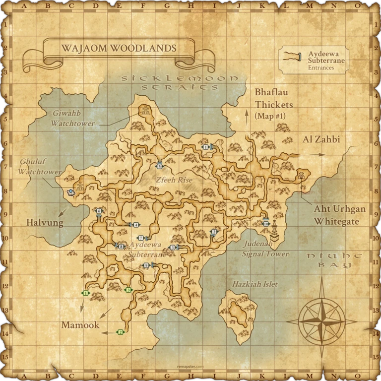
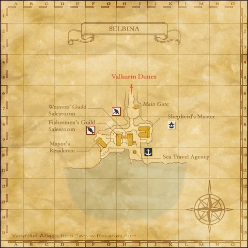

Before you begin
- Access to the Tenshodo area in Lower Jeuno; obtain Tenshodo Membership first.
- One complete accepted item set, one accepted coffer key/testimony, or 500,000 gil. No separate job-level minimum in the pinned quest.
Starting point
Faursel · Lower Jeuno · J-8
Walkthrough
- Enter the Tenshodo rooms inside Neptune's Spire and talk to Faursel. Choose the hidden third option to hear him out, then talk again to hear the permit conditions.
- Choose the item route and confirm the quest. Trade exactly one of the accepted alternatives listed below, without unrelated items.
- Beginner set: one each of Damselfly Worm, Magicked Skull, Crab Apron, Bloody Robe, Dhalmel Saliva and Wild Rabbit Tail.
- Intermediate set: one Jade Cryptex, one Silver Engraving and one Thirteen-knot Quipu.
- Chip set: one Carmine Chip, one Cyan Chip and one Gray Chip.
- Single-item alternative: one Davoi, Beadeaux, Oztroja, Uggalepih, Rancor Den, Quicksand or Grotto Coffer Key; or one job testimony for any of the 20 level-75-era jobs.
- After the item trade, change areas and wait until the next Vana'diel day. Return to Faursel to receive the Boarding Permit.
- Take the mercenary transport from Mhaura to Whitegate, then enter Salaheem's Sentinels at I-10 to begin the story.
Battle and progress notes
- Optional paid route: choose to pay 500,000 gil instead of trading items. Change areas and wait until the next Vana'diel day; Faursel then sends you to Wajaom Woodlands, where the permit and map are awarded. Return to him later to close the quest log.
- The beginner set combines all six subjob-quest items; submitting only the Selbina three or only the Mhaura three will not satisfy this quest.
- Horizon launch-event access items and Imperial Standing tiers are server-specific and are not the pinned Zenith route. The modern Rhapsodies shortcut is also excluded here.
Completion and reward
Boarding Permit key item; the paid route also awards Map of Wajaom Woodlands.
What this opens
- Mercenary transport to Aht Urhgan Whitegate
- ToAU 1: Land of Sacred Serpents
Related walkthroughs
Area maps
Open a zone below, then select a map to enlarge it. Match the named floors and grid coordinates in the steps; these are reference area maps, not a live position tracker.
Lower Jeuno


Mhaura


Aht Urhgan Whitegate


Wajaom Woodlands



Davoi


Beadeaux


Selbina



Zone guides
References
- Horizon reference; its custom launch item list does not apply to Zenith
- BG Wiki permit-route reference
- Reviewed mission implementation
- Reviewed mission implementation
Steps are an original summary of the linked walkthrough and reviewed source. Other servers’ bonus rewards are not included. How to read requirements, waits and battlefield notes.
Additional level-75 reference
|
Walkthrough
- Talk to Faursel inside Neptune's Spire for a cutscene.
- He will give you three options to choose from. The third is a hidden option on the bottom. Choose the hidden option.
- After the cutscene, talk to him a second time for another cutscene.
- Faursel will ask you to collect some items. You may choose the Advanced path, Intermediate path or Beginner path. Alternatively, you may just pay gil. For a list of the items, see below.
- You will need to collect item(s) for Faursel. After trading the item(s) he requests, rezone, wait until the next game day and talk to him again for the Boarding Permit.
- If you choose to pay the gil, talk to him, re-zone and wait till next game day and talk to him again to receive the Silver Sea Ferry Ticket. You will be warped to Wajaom Woodlands after receiving Silver Sea Ferry Ticket.
Advanced
You can choose from the following:
Intermediate
Trade the following Garrison items:
Note: This route is generally not suggested due to the extreme rarity of the listed drops.
Easy/Beginner
Obtain the 6 items that are used in the two sub-job quests:
Gil
Pay 500,000 gil. Note: If you trade the gil, once you come back for your boarding permit, you get knocked out and warped to the Leypoint in Wajaom Woodlands. You still attain the boarding permit though, There's a Chocobo Stable near the leypoint, so bring gil for a rental bird if needed.
Game Description
Client: Faursel (Tenshodo, Lower Jeuno)
Summary:
- If you want to ride the mercenary transport ship from Mhaura, you must bring the required items to the Tenshodo.
Faursel Description
Advanced
The advanced list, eh? A superb choice. The items on this list are few, so they should fit nicely in your bag, but they are quite difficult t' come by. You can choose from the following:
- One coffer key from a beastman stronghold (Davoi, Beadeaux, Castle Oztroja, Temple of Uggalepih, Den of Rancor, Quicksand Caves or Sea Serpent Grotto).
- A “testimony.” Those ancient scraps of papyrus seem t' be quite popular with collectors these days. I don't know all the details, but apparently there's a testimony for any o' the jobs an adventurer can be. Anyway, I just need one. (It has been reported and confirmed that used testimonies work for this quest).
- Your last option is t' bring me chips from Pso'Xja. I'll need a set o' those, though. You'll 'ave to bring me a Carmine Chip, a Cyan Chip, and a Gray Chip, all three.
That's it for the advanced list. You can bring me any one o' the above requests, but if you decide t' bring Pso'Xja chips, I'll need 'em in a set o' three.
Intermediate
Intermediate, eh? This one is quite a bother. Beastmen 'ave been a real plague t' the Near East as of late. Not that we haven't been having problems here, too. But anyway, the situation 'as driven up the demand for beastman spoils. I want you t' bring me a Jade Cryptex, a Silver Engraving, and a Thirteen-Knot Quipus. The beastmen have been using those t' relay orders. I require all three. That's all for the intermediate list. It may sound simple, but those items are scattered all about the strongholds and are rather difficult t' get a hold of.
Easy
You say you want t' go to Aht Urhgan, but you're too big o' a coward to face a challenge, eh? That attitude will get you nowhere in the Empire, I tell you. Ah well, it's all the same t' me, as long as I make a profit. This will be more like running errands, but there are a lot o' things for you to collect on this list. There are a lot o' curious items here. I need you to bring me Magicked Skull, Damselfly Worm, and Crab Apron. Wait, there's more. I also require Bloody Robe and Dhalmel Saliva. ...Oh, and one last thing--Wild Rabbit Tail. Hand me these six items at one time, and I will be satisfied.
Gil
Hoho! So this high and mighty adventurer refuses t' be reduced to running errands! Ah, sorry abou' that. I'm not picking on you, so don't get your feathers in a ruffle. So you are going t' pay me 500000 gil. Is that correct? You won't receive the permit immediately, you know. Are you okay with that?
Adapted from Eden Wiki: The Road to Aht Urhgan · Contributors and history · CC BY-SA 4.0. Revision 9363. Layout, links and optional background text adapted for Zenith.